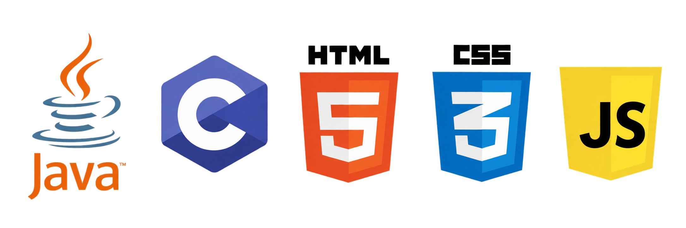

Welcome to my portfolio!
Hi, I'm Zach! I'm a Software Engineering student at Iowa State University pursuing a minor in Artificial Intelligence and Applied Artificial Intelligence. I'm passionate about building technology from both the software and hardware perspectives, with particular interests in full-stack development, embedded systems, and AI.
I enjoy working across the development process, from designing applications and writing backend logic to programming microcontrollers and understanding how software interacts with hardware. As I continue my education I am excited to gain more hands-on experience through projects, coursework, and possibly professional opportunities while finding new areas of software engineering that peak my interest.

The first project is using HTML and CSS to create this webpage! In terms of the layout, a navigation bar is created at the top displaying a list of sections along with a footer. Additionally, I included images and hyperlinks in the sections to add more appeal.
This project was my final semester project for my freshman coding class. It features a terminal-based C game inspired by the hit show Squid Game. It includes multiple minigames such as red light green light, tug of war, and a quickdraw. This project demonstrates my experience with C programming, functions, arrays, randomization, timers, keyboard input, and ncurses library.
Download the C Project